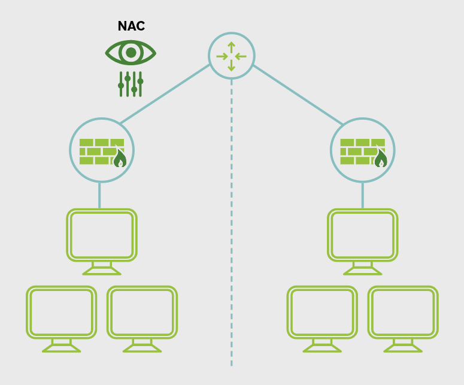

36. Network Access Control (NAC)
NAC is used to identify and control who or what is trying to connect to a network. Its purpose is to make sure only approved and compliant users and devices are allowed access.
Originally, network access mainly involved internal company devices. NAC became more important as organizations started allowing remote access, BYOD (Bring your own device) , and IoT devices on their networks.
NAC works by enforcing the organization’s existing security policies. It does not create the policy; it applies it at the point of network connection.
A NAC solution provides visibility into connected users and devices. It can identify connections, check whether a device meets security requirements, and decide what level of access to allow.
If a device is noncompliant, NAC can isolate it in a quarantined network or restrict its access until the issue is fixed.
NAC is useful for controlling access for:
- medical devices
- IoT devices
- BYOD and mobile devices
- guest users and contractors
A good NAC process includes onboarding and repeated checks when a device connects, so the organization can verify that policy requirements are still being met.

Main Idea
NAC controls network access by identifying devices and users, checking compliance with policy, and allowing, restricting, or isolating connections based on the results.